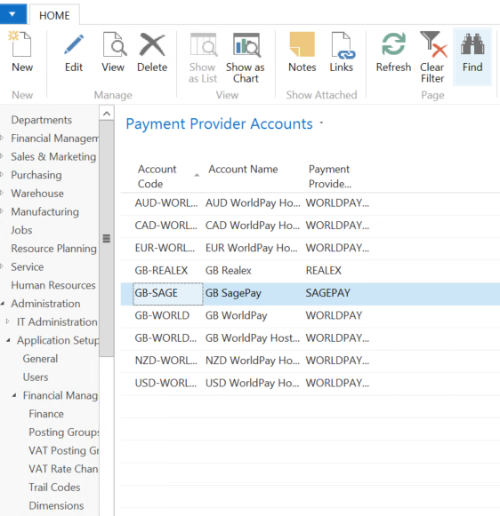

In NAV, go to Departments > Administration > Application Setup > Financial Management > Payment Gateway and select Payment Gateway Setup.
This page defines how NAV connects to the Payment Gateway service from Technology Management.
From the Payment Gateway Setup Screen, go to the Actions tab in the Ribbon and select Get Default Configuration.
Selecting this will complete all the details for the Web Service apart from the password.

When purchasing this Addition from Technology Management you will be allocated a Tenant Code and Access Key, these are your unique identifiers. The combination of these two ensures a payment can only be taken for the set specific company, a payment cannot be taken on behalf of a different company.
In NAV, go to Departments > Administration > Application Setup > Financial Management > Payment Gateway. Under the list option there are three categories, Payment Providers, Payment Provider Account and Payment Provider Acc. Priority.
Payment Provider
If Payment Provider is selected the default payment providers will be presented. Highlighting the relevant payment provider select Accounts in the Home tab on the Ribbon.

This presents the Payment Provider account for that provider.

These accounts need to be setup and with all the information populated. To do this, select new in the top left-hand corner.

All the fields need to be populated correct and account specifically for the set up to work as it should. Each customer will have their own account details which can be filled in here.
Once completed select ok. The account will now be set up.
Payment Provider Account
If Payment Provider Account is selected, this shows all the accounts that have been set up for each account type, such as Sage Pay, WorldPay etc. New accounts can also be created in the section; however, users will need to select the correct Payment Provider Code as this will not be automatically populated. These accounts can be created in the same way as previously stated, and the correct information will need to be populated.

Payment Provider Acc. Priority

If Payment Provider Acc. Priority is selected, user can set up which account will be associated with which document type. For example, when a sales order is requesting payment, it will automatically select to use a WorldPay account. This will then be set as the default payment account but can be changed if needed.

To set these up, select New in the top left-hand corner and a filter page will pop up.
User will need to enter the table number, criteria, payment provider and description.
To select the criteria, a drill down option will be presented in the corner (3 dots). Clicking on this will give the user filters to use to create their criteria.
These filters can be used to select whatever is required by the user.
Customer Card (optional)
A Payment Method Code can be set on the Customer Card for each customer, this can be set to default to Sage (or another Payment Provider such as WorldPay). This will be pulled though on sales documents as the default payment method but can easily be changed on the document. Or it can be left blank and selected for each order.
Note: if this option has been used Payment Gateway V1, then it will be pulled through as a new Account in V2.